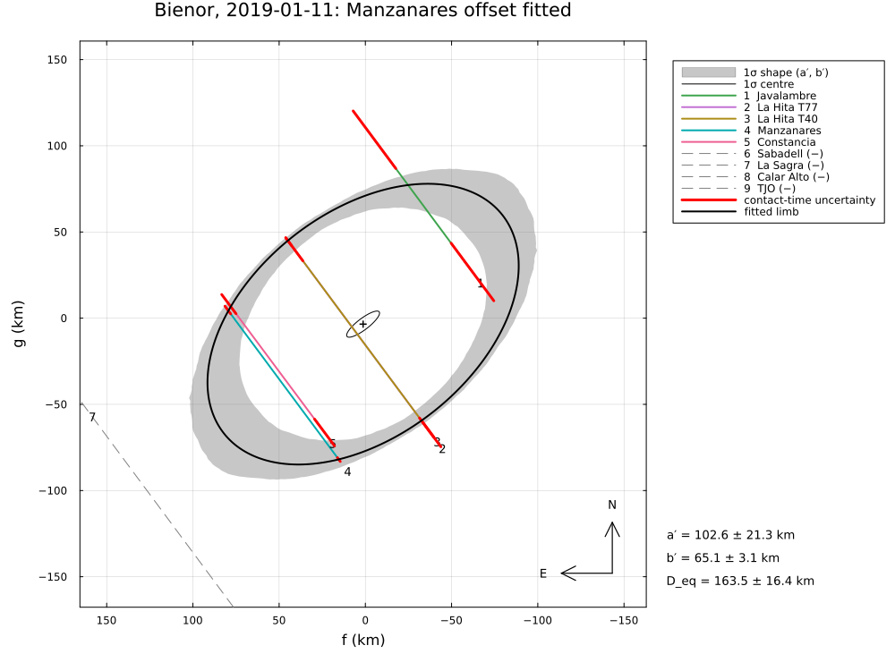
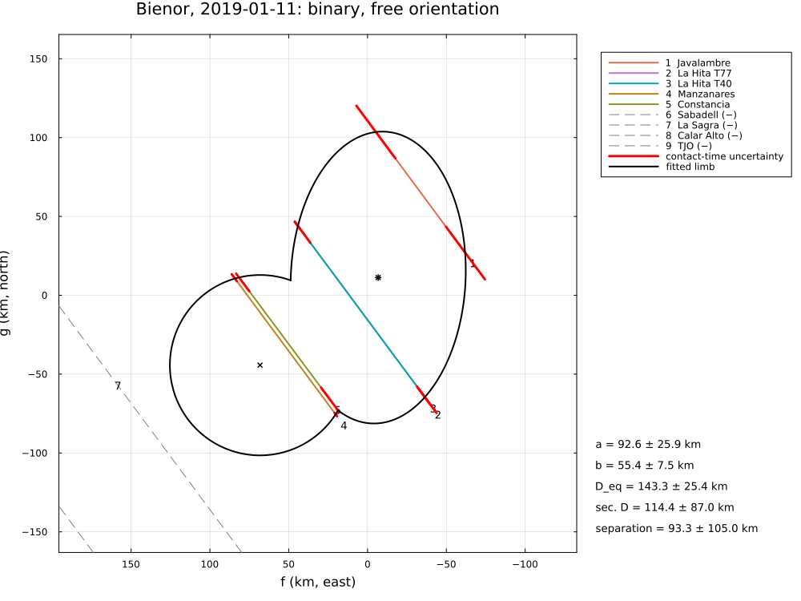
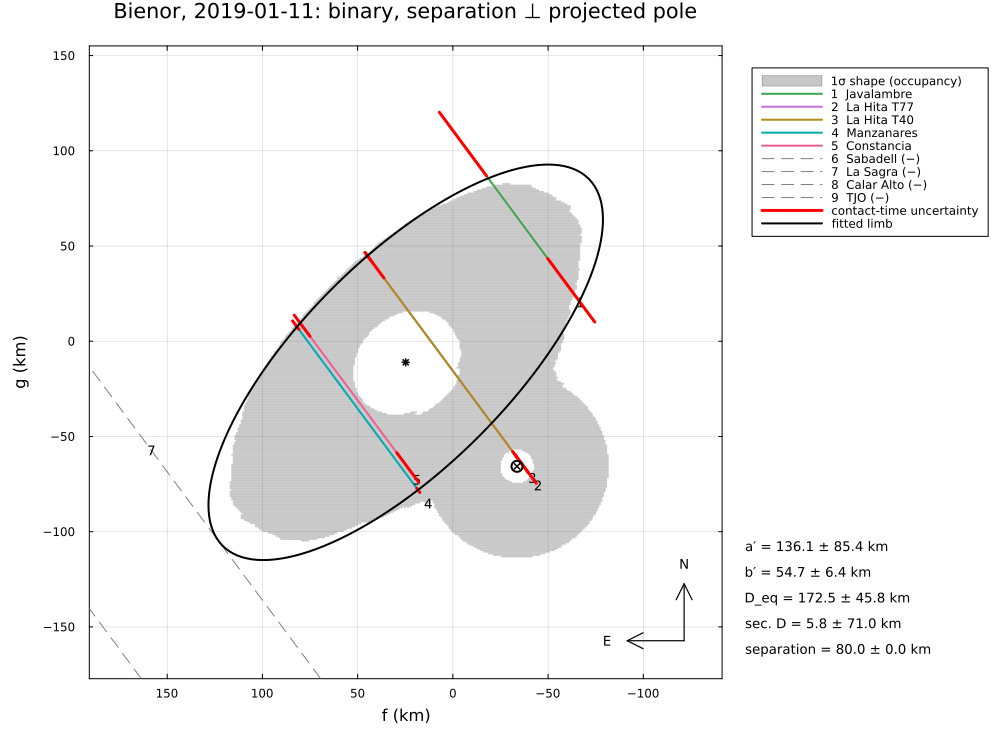
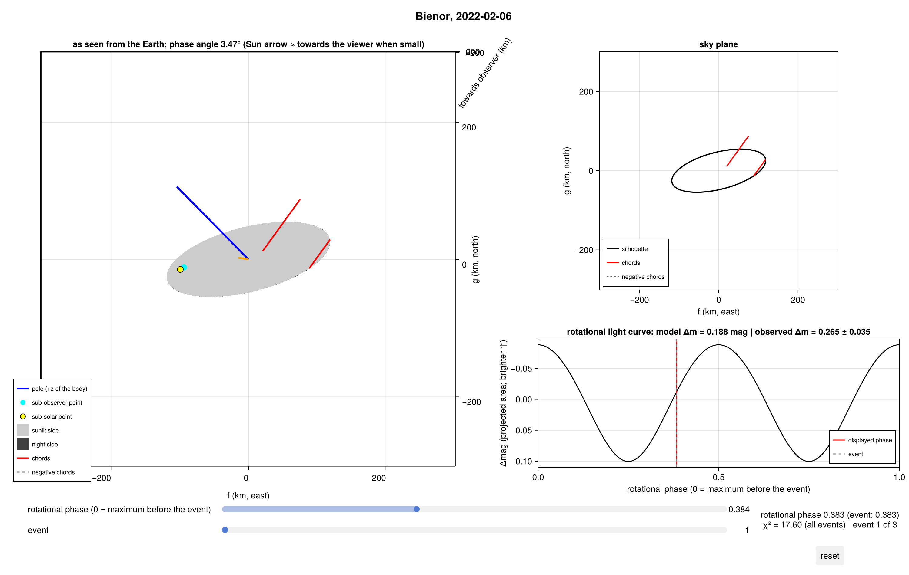

Bienor, 2019–2023
Four stellar occultations by the centaur (54598) Bienor, reduced from the published timings of Fernández-Valenzuela et al. (2023), A&A 669, A112 (2019 January 11: five chords in Spain and Portugal, four negative chords) and Rizos et al. (2024), A&A 689, A82 (2022 February 6, 2022 December 26 and 2023 February 14: two, seven and two chords in the USA, Europe and Japan).
The example covers:
- 2019: the elongated limb, the chord at Manzanares with a clock problem (the paper's scenario S1, a shifted chord, and S2, all chord centres aligned), and the paper's alternative S3 – a close binary – fitted with
BinaryLimb, freely and with the orientation a synchronous binary must have; - 2022 December 26 (Occ. B): the ellipse;
- the three events of 2022–2023 fitted jointly with a triaxial ellipsoid, using the pole and rotational phases of the paper, against its 3-D shape from Occ. B alone.
The data are transcribed in examples/data/bienor_2019_2023.jl, with the stored JPL Horizons ephemerides, so the script runs offline:
julia --project=. examples/bienor_2019_2023.jl [output_dir] (default: examples/output/bienor_2019_2023)The code is not run when the manual is built. The output after each section is that of the last run of examples/bienor_2019_2023.jl, stored in examples/output/bienor_2019_2023/output.txt.
using Occultations, Random, Printf, Statistics
using Plots
import CairoMakie # saves the GeoMakie maps (Makie figures)
include(joinpath(@__DIR__, "standard_figures.jl"))
include(joinpath(@__DIR__, "data", "bienor_2019_2023.jl"))
out = length(ARGS) >= 1 ? ARGS[1] : mkpath(joinpath(@__DIR__, "output", "bienor_2019_2023"))
rng = MersenneTwister(2019)
P = BIENOR_PAPER
row(label, r) = @printf("%-38s a′ = %5.1f ± %4.1f b′ = %4.1f ± %3.1f PA = %5.1f ± %4.1f D_eq = %5.1f χ² = %6.2f (%d dof)\n",
label, r[:equatorial_radius]..., r[:semi_minor_axis]..., mod(r[:position_angle][1], 180),
r[:position_angle][2], 2r[:equivalent_radius][1], r.chi2, r.dof)Events and geometry (paper values in parentheses)
names = ("2019", "A", "B", "C")
evs = Dict(n => bienor_event(n) for n in names)
for n in names
e = evs[n]
@printf("%-4s %s: %d positive and %d negative chords, distance %.3f au, shadow velocity %.2f km/s, star %s\n", n,
e.name, count(ispositive, e.chords), count(isnegative, e.chords), e.ca.dist_km / 1.495978707e8, e.ca.vel,
e.star.name)
end
@printf("(2019: %.2f au and %.2f km/s in the paper)\n", P.distance_2019_au, P.velocity_2019)2019 Bienor, 2019-01-11: 5 positive and 4 negative chords, distance 14.161 au, shadow velocity 13.61 km/s, star Gaia DR2 236278279941456256
A Bienor, 2022-02-06: 2 positive and 0 negative chords, distance 13.391 au, shadow velocity 12.81 km/s, star Gaia DR3 202357903847210880
B Bienor, 2022-12-26: 7 positive and 0 negative chords, distance 12.811 au, shadow velocity 21.76 km/s, star Gaia DR3 961233167113907328
C Bienor, 2023-02-14: 2 positive and 0 negative chords, distance 13.160 au, shadow velocity 12.87 km/s, star Gaia DR3 193308850132660224
(2019: 14.16 au and 13.47 km/s in the paper)2019 January 11: the limb
The paper's ellipses have semi-axes ap, bp and a tilt θ of the major axis from the x axis, clockwise; the position angle of the minor axis is 180° − θ (S1: 52°, S2: 61°).
e19 = evs["2019"]
r0 = fit_limb(e19; rng=rng)
row("timing errors only", r0)Scenario S1: the Manzanares chord (an NTP-synchronised computer) is shifted. Table 3 gives −4.06 s "towards the north-east", i.e. along the shadow motion: +4.06 s in the convention here (a clock offset added to the recorded times). Here the offset is fitted:
r1 = fit_limb(e19; fit_dt=["Manzanares"], rng=rng)
row("Manzanares clock offset free", r1)
@printf(" fitted offset %+.2f ± %.2f s (paper: 4.06 s along the motion)\n", clock_offsets(r1)["Manzanares"]...)
r1p = fit_limb(e19; fit_dt=["Manzanares"], fix=[:dt_Manzanares], init=Dict(:dt_Manzanares => 4.06), rng=rng)
row("Manzanares shifted by +4.06 s (S1)", r1p)Scenario S2: all chord centres aligned; here a clock offset for every chord with a prior N(0, 2 s), which leaves no degree of freedom:
pos = [c.name for c in e19.chords if ispositive(c)]
r2 = fit_limb(e19; fit_dt=pos, priors=Dict(Symbol("dt_", n) => (0.0, 2.0) for n in pos), rng=rng)
row("all clock offsets, priors N(0, 2 s)", r2)
for (k, v) in sort(collect(clock_offsets(r2)))
@printf(" %-12s %+5.2f ± %.2f s (paper S2: %.2f s)\n", k, v..., P.shifts_S2[k])
end
for (s, p) in (("S1", P.S1), ("S2", P.S2))
@printf("published %s: a′ = %.0f ± %.0f, b′ = %.0f ± %.0f km, PA = %.0f ± %.0f°, D_eq = %.0f ± %.0f km\n", s, p.a...,
p.b..., 180 - p.theta[1], p.theta[2], p.D_eq...)
end
for x in check_negative_chords(r1)
@printf(" negative chord %-11s %s, %5.1f km from the limb\n", x.chord, x.conflict ? "CROSSES THE LIMB" : "consistent",
x.distance)
endFive chords at three places across the body: the shape depends on how the clock problems are treated. The fitted offset of Manzanares (+2.7 s) is smaller than the paper's 4.06 s, which aligns the chord with the ingress at Constância; with the paper's shift the orientation differs from S1 (PA 14° against 52°, both with large errors). The paper's S2 shifts do not follow from a fit (they align the chord centres exactly). The minor axis (55–65 km) is better determined than the major axis and the orientation.
timing errors only a′ = 122.6 ± 19.6 b′ = 55.1 ± 3.2 PA = 77.2 ± 4.2 D_eq = 164.4 χ² = 56.34 (5 dof)
Manzanares clock offset free a′ = 102.6 ± 21.3 b′ = 65.1 ± 3.1 PA = 38.0 ± 9.9 D_eq = 163.5 χ² = 10.96 (4 dof)
fitted offset +2.70 ± 0.40 s (paper: 4.06 s along the motion)
Manzanares shifted by +4.06 s (S1) a′ = 110.2 ± 23.4 b′ = 60.4 ± 2.4 PA = 14.0 ± 6.8 D_eq = 163.2 χ² = 22.51 (5 dof)
all clock offsets, priors N(0, 2 s) a′ = 110.2 ± 23.4 b′ = 59.8 ± 8.3 PA = 68.5 ± 16.1 D_eq = 162.4 χ² = 3.84 (0 dof)
Constancia -1.76 ± 1.27 s (paper S2: 3.00 s)
Javalambre -0.22 ± 1.81 s (paper S2: 2.60 s)
La Hita T40 +0.42 ± 0.99 s (paper S2: 1.01 s)
La Hita T77 +0.25 ± 0.97 s (paper S2: 1.01 s)
Manzanares +1.33 ± 1.30 s (paper S2: -0.50 s)
published S1: a′ = 94 ± 27, b′ = 66 ± 5 km, PA = 52 ± 13°, D_eq = 160 ± 20 km
published S2: a′ = 97 ± 24, b′ = 64 ± 4 km, PA = 61 ± 7°, D_eq = 160 ± 20 km
negative chord La Sagra consistent, 55.6 km from the limb
negative chord Calar Alto consistent, 131.2 km from the limb
negative chord Sabadell consistent, 169.0 km from the limb
negative chord TJO consistent, 196.9 km from the limb2019 January 11: a close binary (the paper's scenario S3)
The paper fits two ellipses, with the total area constrained to the thermal diameter. Two ellipses (10 parameters) and the Manzanares offset are more than the 10 contact times can determine; an ellipse and a circle leave one degree of freedom:
model2 = BinaryLimb(EllipseLimb(), CircleLimb())
rb = fit_limb(e19; model=model2, fit_dt=["Manzanares"], starts=20, rng=rng)
# the position angle of the projected rotation pole at the event (the paper's prograde pole)
u19 = EventContext(e19).u
pv = [cosd(P.pole[2]) * cosd(P.pole[1]), cosd(P.pole[2]) * sind(P.pole[1]), sind(P.pole[2])]
α19, δ19 = atan(u19[2], u19[1]), asin(u19[3])
θp = mod(atand(pv' * [-sin(α19), cos(α19), 0.0], pv' * [-sin(δ19) * cos(α19), -sin(δ19) * sin(α19), cos(δ19)]), 360)
@printf("free orientation: primary a′ = %.0f ± %.0f, b′ = %.0f ± %.0f km; secondary radius %.0f ± %.0f km; separation %.0f km at PA %.0f°; χ² = %.2f (%d dof)\n",
rb[:equatorial_radius]..., rb[:semi_minor_axis]..., rb[:sec_radius]..., rb[:separation][1], rb[:separation_pa][1],
rb.chi2, rb.dof)
@printf("projected rotation pole at PA %.0f° (paper: 300–340°)\n", θp)A synchronous binary orbits in Bienor's equatorial plane, and at the occultation, close to a maximum of light, its components are side by side: the separation must be roughly perpendicular to the projected pole. The free solution puts it nearly along the pole. With the separation fixed perpendicular to the pole, the distance is scanned:
best = nothing
for s in (θp + 90, θp - 90), d in 50.0:10.0:150.0
r = fit_limb(e19; model=model2, fit_dt=["Manzanares"], fix=[:sep_f, :sep_g],
init=Dict(:sep_f => d * sind(s), :sep_g => d * cosd(s)), starts=8, rng=rng)
(best === nothing || r.chi2 < best.chi2) && (global best = r)
end
@printf("separation ⊥ pole: best χ² = %.2f at %.0f km (PA %.0f°); primary a′ = %.0f, b′ = %.0f km; secondary radius %.0f km\n",
best.chi2, best[:separation][1], best[:separation_pa][1], best[:equatorial_radius][1], best[:semi_minor_axis][1],
best[:sec_radius][1])
@printf("published S3: E1 %.0f × %.0f km, E2 %.0f × %.0f km, total D_eq = %.0f ± %.0f km\n", P.S3.E1.a[1], P.S3.E1.b[1],
P.S3.E2.a[1], P.S3.E2.b[1], P.S3.D_eq...)With the physically expected orientation the secondary shrinks to a small appendage of an elongated primary (or is not crossed by any chord at larger separations, χ² as for one ellipse): the 2019 chords give no support for two comparable bodies. The free binary fits better only with an orientation a synchronous binary cannot have at maximum light; the paper's S3 needs the thermal diameter as an extra constraint. The later events (below) are fitted by a single ellipsoid.
free orientation: primary a′ = 93 ± 26, b′ = 55 ± 8 km; secondary radius 57 ± 43 km; separation 93 km at PA 127°; χ² = 1.65 (1 dof)
projected rotation pole at PA 317° (paper: 300–340°)
separation ⊥ pole: best χ² = 3.59 at 70 km (PA 227°); primary a′ = 147, b′ = 54 km; secondary radius 14 km
published S3: E1 84 × 57 km, E2 67 × 60 km, total D_eq = 188 ± 9 km2022 December 26 (Occ. B): the limb
eB = evs["B"]
rB = fit_limb(eB; rng=rng)
row("timing errors only", rB)
rBs = fit_limb(eB; σ_limb=:auto, rng=rng)
row(@sprintf("σ_limb = %.1f km", rBs.problem.σ_limb), rBs)
@printf("published: u = %.1f ± %.1f, v = %.1f ± %.1f km, position angle %.1f ± %.1f° (+90° = %.1f°), D_eq = %.0f ± %.0f km\n",
P.B.u..., P.B.v..., P.B.position_angle..., P.B.position_angle[1] + 90, P.B.D_eq...)The paper's position angle (19.3°) is that of the major axis; the minor axis is at 109°. With the timing errors alone χ²/dof ≈ 15: the chords show more structure than an ellipse.
timing errors only a′ = 104.2 ± 2.6 b′ = 51.0 ± 0.6 PA = 110.3 ± 0.7 D_eq = 145.8 χ² = 134.66 (9 dof)
σ_limb = 9.4 km a′ = 118.3 ± 11.3 b′ = 46.4 ± 3.7 PA = 106.5 ± 2.7 D_eq = 148.1 χ² = 8.09 (9 dof)
published: u = 107.0 ± 3.7, v = 51.9 ± 2.1 km, position angle 19.3 ± 3.4° (+90° = 109.3°), D_eq = 149 ± 4 km2022–2023: a triaxial ellipsoid from three events
The rotation pole from the paper's aspect and position angles (prograde solution, fixed), the sidereal period 9.1736 h, the rotational phases at the three events (Table 5; 0 = maximum of light) and the amplitude of the light curves of 2021 and 2023 (0.23–0.30 mag; taken as 0.265 ± 0.035 mag at Occ. B). The Van Vleck chord of Occ. A (NTP) gets a free clock offset (the paper shifts it by 4.0 s). Each event has its own centre.
evs3 = [evs[n] for n in ("A", "B", "C")]
phases = [RotationalPhase(e.tref, P.phases[n]...) for (e, n) in zip(evs3, ("A", "B", "C"))]
amp = RotationalAmplitude(evs["B"].tref, sum(P.amplitude_2021_2023) / 2, 0.035)
prob = LimbProblem(evs3; model=EllipsoidLimb(principal=true), amplitudes=[amp], phases=phases, fit_dt=["Van Vleck"],
σ_limb=rBs.problem.σ_limb, fix=[:pole_ra, :pole_dec],
init=Dict(:a => 120.0, :b => 60.0, :c => 45.0, :pole_ra => P.pole[1], :pole_dec => P.pole[2],
:W0 => 0.0, :period => P.period_h[1]),
bounds=Dict(:a => (30.0, 400.0), :b => (20.0, 300.0), :c => (20.0, 300.0)))
sols = [fit(prob; rng=MersenneTwister(k), starts=12) for k in 1:3]
r3 = sols[argmin([s.chi2 for s in sols])]
@printf("a = %.1f ± %.1f, b = %.1f ± %.1f, c = %.1f ± %.1f km, D_eq,V = %.1f km, χ² = %.2f (%d dof)\n", r3[:a]..., r3[:b]...,
r3[:c]..., 2r3[:volume_equivalent_radius][1], r3.chi2, r3.dof)
@printf("published (Occ. B and the light curves): a = %.0f ± %.0f, b = %.0f ± %.0f, c = %.0f ± %.0f km\n", P.axes_3d[1]...,
P.axes_3d[2]..., P.axes_3d[3]...)
@printf("Van Vleck clock offset %+.2f ± %.2f s (paper: shifted by %.1f s)\n", clock_offsets(r3)["Van Vleck"]..., P.van_vleck_shift)The ellipsoid from the three events agrees with the paper's (which rests on Occ. B and the light-curve amplitude) within the errors; c is 1.5σ smaller. The two-chord events A and C are consistent with it at their rotational phases. Its light-curve amplitude at Occ. B (about 0.19 mag, see the figure) is below the observed 0.23–0.30 mag: the chords prefer a less elongated body than the light curves; the paper's grid search weighs the amplitude more.
a = 136.8 ± 15.7, b = 52.5 ± 4.0, c = 36.2 ± 4.8 km, D_eq,V = 127.6 km, χ² = 17.60 (15 dof)
published (Occ. B and the light curves): a = 127 ± 5, b = 55 ± 4, c = 45 ± 4 km
Van Vleck clock offset -4.63 ± 1.44 s (paper: shifted by 4.0 s)Astrometry
for (label, r) in (("2019 (S1 offset fitted)", r1), ("Occ. B", rBs))
a = astrometry(r)
@printf("%-24s RA %s Dec %s at %s UTC (σ %.1f, %.1f mas); offset from JPL Horizons Δα cos δ = %+.1f, Δδ = %+.1f mas\n",
label, a.ra_str, a.dec_str, isot(a.epoch; digits=1), a.ra_err, a.dec_err, a.offset_ra, a.offset_dec)
end2019 (S1 offset fitted) RA 03 19 57.79259 Dec +40 40 53.0762 at 2019-01-11T01:09:09.8 UTC (σ 1.0, 0.8 mas); offset from JPL Horizons Δα cos δ = +0.1, Δδ = -0.3 mas
Occ. B RA 06 06 16.68447 Dec +43 59 24.2190 at 2022-12-26T20:13:45.5 UTC (σ 0.4, 1.1 mas); offset from JPL Horizons Δα cos δ = +3.7, Δδ = +1.8 masFigures
savefig(plot(r1; title="Bienor, 2019-01-11: Manzanares offset fitted", size=(1000, 750)), joinpath(out, "bienor_2019.png"))
savefig(plot(rb; title="Bienor, 2019-01-11: binary, free orientation", size=(1000, 750)),
joinpath(out, "bienor_2019_binary.png"))
savefig(plot(best; title="Bienor, 2019-01-11: binary, separation ⊥ projected pole", size=(1000, 750)),
joinpath(out, "bienor_2019_binary_perp.png"))
CairoMakie.save(joinpath(out, "bienor_occview.png"), occview(r3))
# the standard figures of Occ. B: limb fits, maps and the globe
standard_figures("bienor", rBs; out=out, projection="+proj=laea +lon_0=60 +lat_0=45", limits=(-15, 145, 25, 60),
window=900, marks=60)
println("figures written to ", out)The 2019 limb with the fitted clock offset of Manzanares, and the binary alternative (free, and with the separation perpendicular to the projected pole):



The triaxial ellipsoid of 2022–2023 at the three events:
